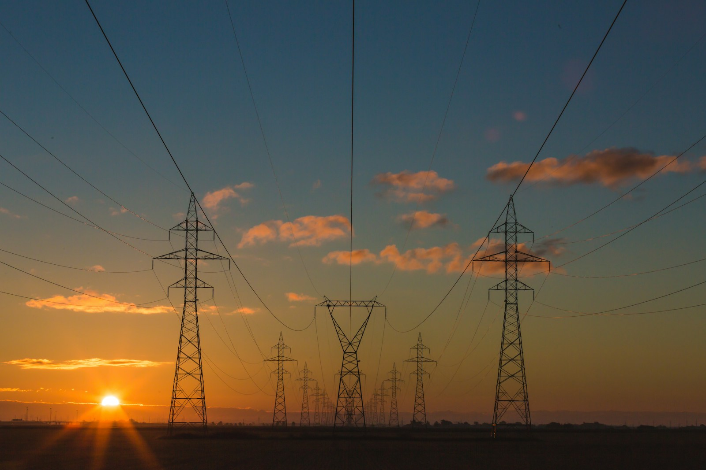
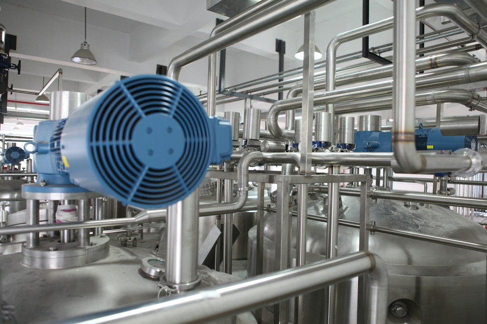

Енергетика

Проєктування енергоощадних систем та модернізація електромереж підприємств.
Зв’язок з державними органами: подання необхідної проєктної документації до відповідних органів та взаємодія з місцевою владою.

Проєктування енергоощадних систем та модернізація електромереж підприємств.
Зв’язок з державними органами: подання необхідної проєктної документації до відповідних органів та взаємодія з місцевою владою.

Оновлення обладнання та впровадження автоматизації виробничих процесів.
Зв’язок з державними органами: взаємодія з органами нагляду щодо вимог охорони праці та безпеки виробництва.

Розробка проєктів громадських просторів та модернізація міського освітлення.
Зв’язок з державними органами: узгодження проєктів із міськими радами та профільними підрозділами місцевих адміністрацій.